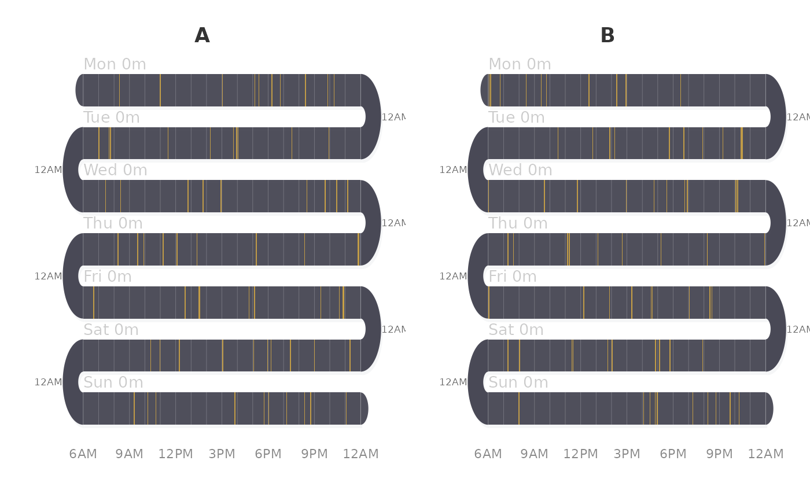

Splits data by a grouping variable and draws side-by-side snake panels.
Works with activity_snake, survey_snake, survey_sequence,
sequential_dist, or line_snake.
Usage
facet_snake(data, facet_var, FUN = activity_snake, ncol = NULL, ...)
Arguments
- data
Data to plot (passed to FUN).
- facet_var
Character. Column name in data to facet by.
- FUN
Function to call for each panel. Default activity_snake.
- ncol
Integer. Number of columns in the facet grid. Default: number
of facet levels (all in one row).
- ...
Additional arguments passed to FUN.
Value
Invisible list of results from each panel call.
Examples
set.seed(42)
d <- data.frame(
group = rep(c("A", "B"), each = 70),
day = rep(rep(c("Mon", "Tue", "Wed", "Thu", "Fri", "Sat", "Sun"),
each = 10), 2),
start = round(runif(140, 360, 1400)),
duration = 0
)
facet_snake(d, "group")
